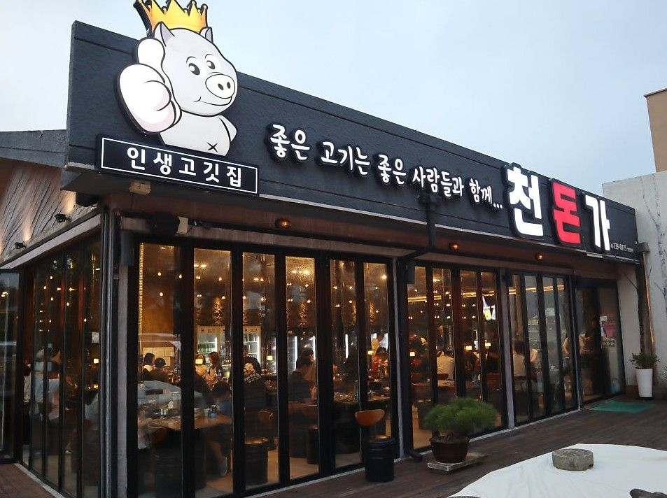
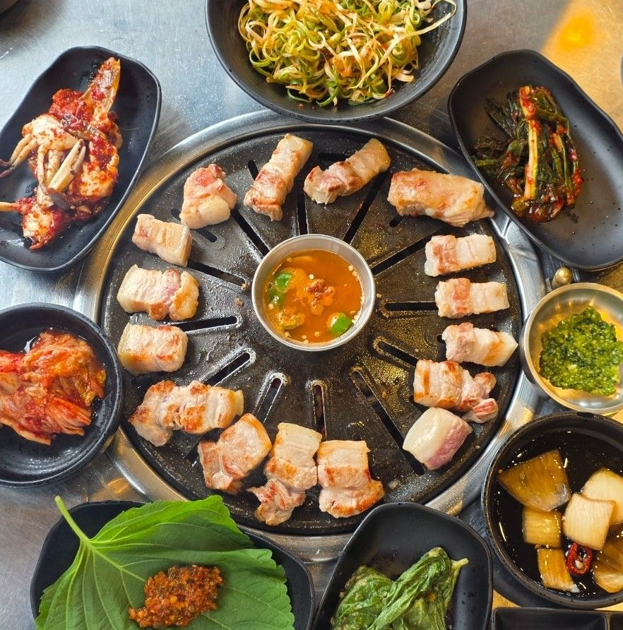
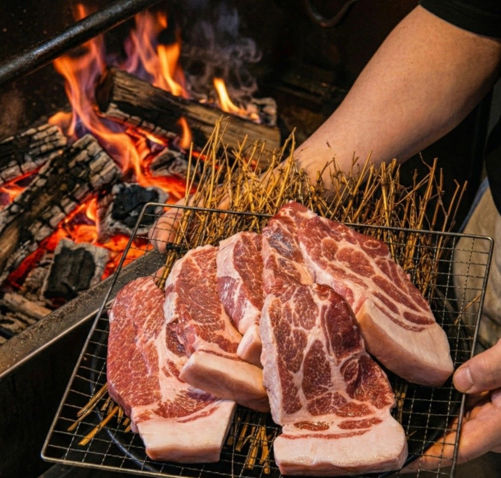
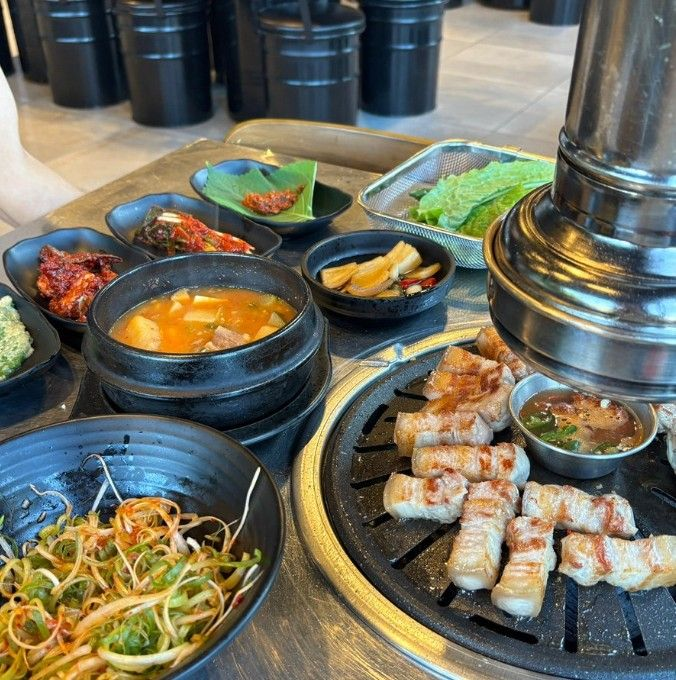
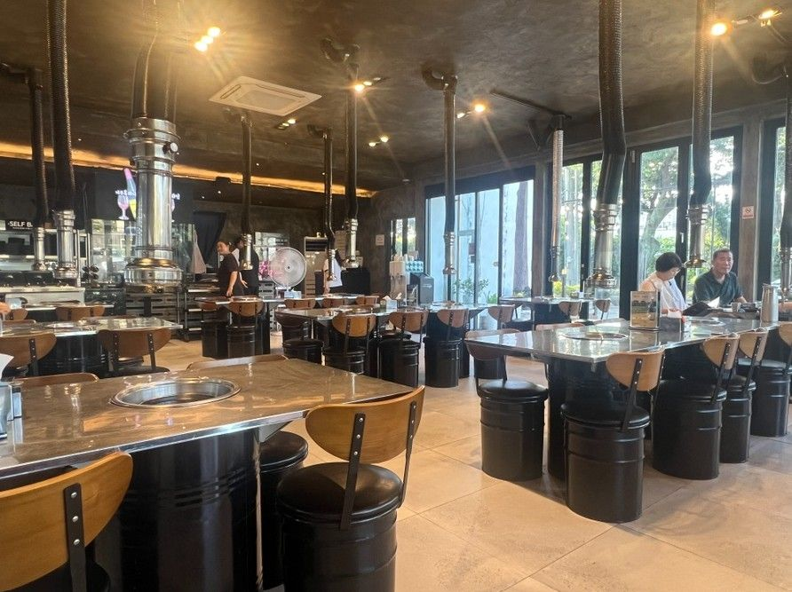
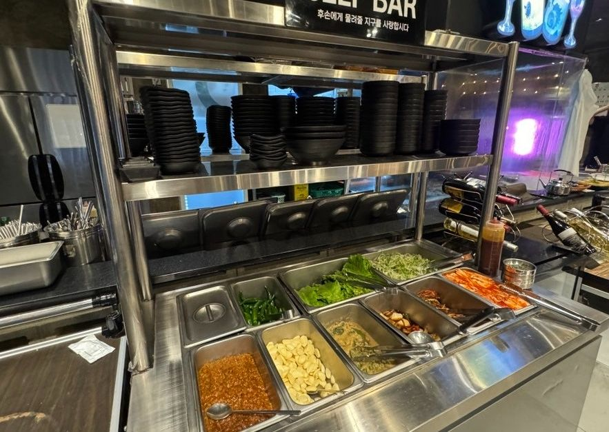
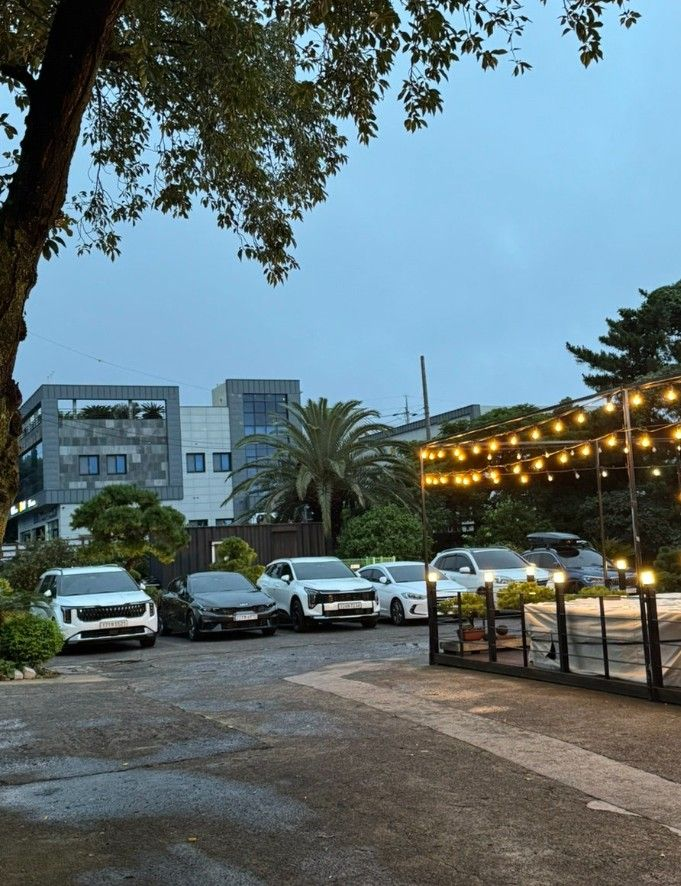

제주 중문 · 제주흑돼지 난축맛돈
좋은 고기는
좋은 사람들과 함께
흑돼지 오마카세처럼,
부위마다 순서대로 구워 드려요
전화 064-739-0775

흑돼지 오마카세처럼
부위마다, 순서대로
직원이 구워 드리며 한 점씩 먹는 법을 알려 드려요.
- 목살첫 점은 소금
- 솔지살 (목덜미)바질 소스
- 쫀득살된장깻잎과 바질
- 쫀득살상추와 파채, 멸치살젓
직접 구워 드시고 싶으면 편하게 말씀해 주세요.
순서는 유건 님 2026-10-27 카톡 · "직접 굽기" 되는지는 확인 중
매장 · 셀프바 · 주차장



오시는 길
중문보건소 건너편
천돈가 · 천제연로 280네이버 지도에서 보기
네이버 지도 키(NCP Maps) 받으면 여기 지도가 바로 보임
- 주소
- 서귀포시 천제연로 280, 1층
- 영업
- 11:30~23:00 · 마지막 주문·휴무 확인
직원에게 보여 주세요
- 메뉴판 보여 주세요.
- 고기 구워 주세요.
- 저희가 직접 구울게요.
- 계산할게요.